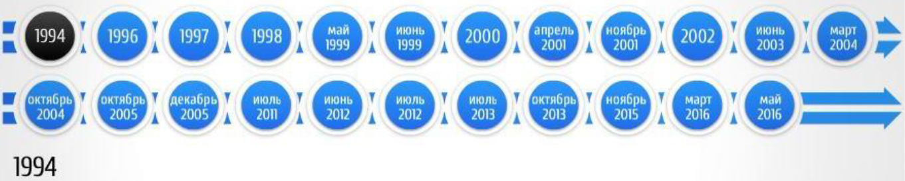

Лекция 6. Основные этапы становления национальной системы ПОД/ФТ¶
Основные этапы становления национальной системы ПОД/ФТ¶

1994¶
Формирование национальной системы ПОД/ФТ в России началось с разработки концепции и проекта Федерального закона «Об ответственности за легализацию преступных доходов» в соответствии с Указом Президента Российской Федерации №1016 от 24 мая 1994 года.
Sự hình thành hệ thống AML/CFT quốc gia ở Nga bắt đầu bằng việc xây dựng khái niệm và dự thảo Luật Liên bang “Về trách nhiệm rửa tiền” theo Nghị định của Tổng thống Liên bang Nga số 1016 của Ngày 24 tháng 5 năm 1994.
В процессе работы над проектом указанного Федерального закона при согласовании его с правоохранительными, экономическими и финансовыми ведомствами его концепция изменилась. Законопроект стал называться проектом Федерального закона «О противодействии легализации (отмыванию) доходов, полученных незаконным путем».
Trong quá trình soạn thảo Luật Liên bang này, khi phối hợp với các cơ quan thực thi pháp luật, kinh tế và tài chính, khái niệm của nó đã thay đổi. Dự luật được gọi là dự thảo Luật Liên bang “Về chống hợp pháp hóa (rửa tiền) thu nhập có được bất hợp pháp”.
1996¶
В связи с подготовкой рассматриваемого Федерального закона в принятом в 1996 году Уголовном кодексе Российской Федерации появилась статья 174, установившая уголовную ответственность за легализацию (отмывание) доходов, полученных незаконным путем.
Liên quan đến việc soạn thảo Luật Liên bang đang được xem xét, Điều 174 xuất hiện trong Bộ luật Hình sự Liên bang Nga, được thông qua năm 1996, quy định trách nhiệm hình sự đối với việc hợp pháp hóa (rửa tiền) thu nhập có được bất hợp pháp.
Та же концепция была реализована при разработке Модельного закона «О противодействии легализации (отмыванию) доходов, полученных незаконным путем», принятого Межпарламентской Ассамблеей государств - участников СНГ 8 декабря 1998 года.
Khái niệm tương tự đã được thực hiện trong quá trình xây dựng Luật mẫu “Về chống hợp pháp hóa (rửa tiền) thu nhập có được bất hợp pháp”, được Hội đồng liên nghị viện của các quốc gia thành viên CIS thông qua vào ngày 8 tháng 12 năm 1998.
1997¶
Россия приняла участие в деятельности Комитета Совета Европы по оценке мер борьбы с отмыванием денег, созданного в 1997 году.
Nga đã tham gia vào các hoạt động của Ủy ban đánh giá chống rửa tiền của Hội đồng Châu Âu, được thành lập vào năm 1997.
1998¶
21 октября 1998 года Государственная Дума Российской Федерации приняла Федеральный закон «О противодействии легализации (отмыванию) доходов, полученных незаконным путем», который затем не получил необходимого одобрения со стороны Совета Федерации.
Vào ngày 21 tháng 10 năm 1998, Duma Quốc gia Liên bang Nga đã thông qua Luật Liên bang “Về chống hợp pháp hóa (rửa tiền) thu nhập có được bất hợp pháp”, sau đó không nhận được sự chấp thuận cần thiết từ Hội đồng Liên bang.
1999¶
В мае 1999 года Россия подписала Страсбургскую конвенцию Совета Европы об отмывании, выявлении, изъятии и конфискации доходов от преступной деятельности 1990 года. Чуть позднее при МВД РФ был создан Межведомственный центр по ПОД/ФТ.
Vào tháng 5 năm 1999, Nga đã ký Công ước Strasbourg của Hội đồng Châu Âu về Rửa tiền, Khám xét, tịch thu và tịch thu số tiền thu được từ tội phạm, 1990. Một lát sau, Trung tâm liên ngành về AML/CFT được thành lập trực thuộc Bộ Nội vụ Liên bang Nga.
Создание Межведомственного центра внесло большой вклад в реализацию в России международных стандартов борьбы с отмыванием денег, координацию деятельности финансовых, правоохранительных и контрольных органов. Однако Центр не мог выполнять функции национального ПФР из-за отсутствия в стране системы обязательного представления финансовыми учреждениями информации о подозрительных операциях. Для создания такой системы требовалась соответствующая правовая основа, включая базовый закон о борьбе с отмыванием денег.
Việc thành lập Trung tâm liên ngành đã góp phần to lớn vào việc thực hiện các tiêu chuẩn chống rửa tiền quốc tế ở Nga và điều phối hoạt động của các cơ quan tài chính, thực thi pháp luật và kiểm soát. Tuy nhiên, Trung tâm không thể thực hiện các chức năng của một FIU quốc gia do trong nước không có hệ thống bắt buộc báo cáo thông tin về các giao dịch đáng ngờ của các tổ chức tài chính. Để tạo ra một hệ thống như vậy, cần có một khung pháp lý phù hợp, bao gồm cả luật chống rửa tiền cơ bản.
Состав Межведомственного центра
Помимо сотрудников МВД РФ, в состав межведомственного центра вошли сотрудники следующих государственных органов:
Министерство финансов Российской Федерации
Министерство экономики Российской Федерации
Министерство Российской Федерации по налогам и сборам (Федеральная налоговая служба)
Государственный таможенный комитет России
Федеральная служба безопасности Российской Федерации
Федеральная служба налоговой полиции Российской Федерации
Федеральная служба России по валютному и экспортному контролю
Thành phần của Trung tâm liên ngành
Ngoài các nhân viên của Bộ Nội vụ Liên bang Nga, trung tâm liên ngành còn có nhân viên của các cơ quan chính phủ sau:
Bộ Tài chính Liên bang Nga
Bộ Kinh tế Liên bang Nga
Bộ Thuế và Nghĩa vụ Liên bang Nga (Cục Thuế Liên bang)
Ủy ban Hải quan Nhà nước Nga
Cơ quan An ninh Liên bang Liên bang Nga
Cục Cảnh sát Thuế Liên bang Liên bang Nga
Cơ quan Liên bang Nga về Kiểm soát Tiền tệ và Xuất khẩu
Основные задачи Межведомственного центра
Сбор, анализ, проверка сведений в сфере ПОД/ФТ
Организация взаимодействия и сотрудничества в сфере ПОД/ФТ
Информационно аналитическое и организационно методическое обеспечение ПОД/ФТ
Nhiệm vụ chính của Trung tâm liên ngành
Thu thập, phân tích, xác minh thông tin trong lĩnh vực AML/CFT
Tổ chức tương tác, hợp tác trong lĩnh vực AML/CFT
Hỗ trợ về mặt phương pháp thông tin, phân tích và tổ chức cho AML/CFT
После доработки законопроекта 4 июня 1999 года он был принят Государственной Думой в измененной редакции, а 25 июня 1999 года одобрен Советом Федерации. Федеральный закон «О противодействии легализации (отмыванию) доходов, полученных незаконным путем», был отклонен Президентом Российской Федерации.
Sau khi hoàn thiện dự luật vào ngày 4 tháng 6 năm 1999, nó đã được Duma Quốc gia thông qua trong một phiên bản sửa đổi và được Hội đồng Liên bang thông qua vào ngày 25 tháng 6 năm 1999. Luật Liên bang “Về chống hợp pháp hóa (rửa tiền) thu nhập có được bất hợp pháp” đã bị Tổng thống Liên bang Nga bác bỏ.
Согласно указанному законопроекту сообщения об операциях, подлежащих обязательному контролю, следовало направлять в государственные налоговые инспекции, а об операциях с иностранной валютой - в Федеральную службу России по валютному и экспортному контролю. Такой подход не позволил бы создать в России единое подразделение финансовой разведки.
Theo dự luật này, các báo cáo về các giao dịch chịu sự kiểm soát bắt buộc lẽ ra phải được gửi đến các cơ quan thanh tra thuế tiểu bang và về các giao dịch bằng ngoại tệ - tới Cơ quan Kiểm soát Xuất khẩu và Tiền tệ Liên bang Nga. Cách tiếp cận như vậy sẽ không cho phép thành lập một đơn vị tình báo tài chính thống nhất ở Nga.
2000¶
В июне 2000 г. ФАТФ опубликовала список стран и территорий, которые не принимают целенаправленных мер по предотвращению отмывания денег. Среди 15 стран, включенных в первую редакцию «черного списка» ФАТФ, была указана и Россия.
Vào tháng 6 năm 2000, FATF đã công bố danh sách các quốc gia và vùng lãnh thổ không thực hiện các biện pháp có chủ đích để ngăn chặn hoạt động rửa tiền. Trong số 15 quốc gia có tên trong phiên bản đầu tiên của “danh sách đen” FATF, Nga cũng có tên trong danh sách.
Следует признать, что на момент проведения оценки ФАТФ система противодействия отмыванию денег в России действительно отсутствовала. В качестве основного фактора, препятствующего улучшению национального режима в данной сфере, эксперты ФАТФ указали на отсутствие в России отвечающих международным стандартам базового закона о противодействии отмыванию денег и нормативных актов, обеспечивающих его исполнение.
Cần phải thừa nhận rằng tại thời điểm FATF đánh giá, thực sự ở Nga không có hệ thống chống rửa tiền. Là yếu tố chính cản trở việc cải thiện chế độ quốc gia trong lĩnh vực này, các chuyên gia của FATF chỉ ra rằng ở Nga thiếu luật cơ bản về chống rửa tiền và các quy định đảm bảo việc thực thi luật này đáp ứng các tiêu chuẩn quốc tế.
2001 Апрель¶
Важнейшим шагом России по созданию национальной системы ПОД/ФТ стала доработка имевшихся проектов законов «О противодействии легализации (отмыванию) доходов, полученных незаконным путем», и «О внесении изменений и дополнений в законодательные акты Российской Федерации в связи с принятием Федерального Закона «О противодействии легализации (отмыванию) доходов, полученных незаконным путем».
Bước quan trọng nhất ở Nga để tạo ra hệ thống AML/CFT quốc gia là hoàn thiện các dự thảo luật hiện hành “Về chống hợp pháp hóa (rửa tiền) thu nhập có được bất hợp pháp” và “Về giới thiệu các sửa đổi và bổ sung đối với các hành vi lập pháp của Liên bang Nga liên quan đến việc thông qua Luật Liên bang “Chống hợp pháp hóa (rửa tiền) thu nhập có được bất hợp pháp”.
Поправки, внесённые в закон
Законопроекты были внесены в Государственную Думу Президентом Российской Федерации в апреле 2001 г. и стали там предметом острого обсуждения. В процессе принятия законопроектов в них был внесен ряд депутатских поправок, направленных в основном на сужение сферы их действия.
Những sửa đổi về luật
Các dự luật đã được Tổng thống Liên bang Nga đưa vào Duma Quốc gia vào tháng 4 năm 2001 và trở thành chủ đề thảo luận sôi nổi ở đó. Trong quá trình thông qua các dự luật, một số sửa đổi của quốc hội đã được đưa vào chúng, chủ yếu nhằm mục đích thu hẹp phạm vi hành động.
1 Ноября 2001¶
Создан Комитет по финансовому мониторингу (с 2004 года - Федеральная служба по финансовому мониторингу), выполняющий функции ПФР. С момента принятия закона «О противодействии легализации (отмыванию) доходов, полученных незаконным путем» и создания Комитета по финансовому мониторингу в России сделан значительный шаг вперед в отношении противодействия отмыванию денег.
Ủy ban Giám sát Tài chính được thành lập (từ năm 2004 - Cơ quan Giám sát Tài chính Liên bang), thực hiện các chức năng của Quỹ Hưu trí. Kể từ khi thông qua luật “Về chống hợp pháp hóa (rửa tiền) thu nhập có được bất hợp pháp” và việc thành lập Ủy ban giám sát tài chính ở Nga, một bước tiến đáng kể đã được thực hiện liên quan đến việc chống rửa tiền.
2002¶
В июне 2002 года Россия была исключена из «черного списка» ФАТФ, что стало оценкой всех тех усилий и шагов, которые были предприняты в нашей стране в сфере борьбы с отмыванием преступных доходов.
Vào tháng 6 năm 2002, Nga đã bị loại khỏi danh sách đen của FATF, đây là sự đánh giá về tất cả những nỗ lực và bước đi mà nước ta đã thực hiện trong cuộc chiến chống rửa tiền.
2003, июнь¶
Россия стала полноправным членом Группы разработки финансовых мер борьбы с отмыванием денег (FATF).
Nga đã trở thành thành viên chính thức của Lực lượng đặc nhiệm hành động tài chính (FATF).
2004, март¶
Указом Президента Российской Федерации «О системе и структуре федеральных органов исполнительной власти» от 9 марта 2004 г. № 314 КФМ России преобразован в Федеральную службу по финансовому мониторингу (Росфинмониторинг), подведомственную Министерству финансов РФ.
Theo Nghị định của Tổng thống Liên bang Nga “Về hệ thống và cơ cấu của các cơ quan hành pháp liên bang” ngày 9 tháng 3 năm 2004 số 314, CFM của Nga đã được chuyển đổi thành Cơ quan giám sát tài chính liên bang (Rosfinmonitoring), trực thuộc Bộ Tài chính Liên bang Nga.
2004, октябрь¶
Создание Евразийской группы по противодействию легализации преступных доходов и финансированию терроризма (ЕАГ), в нее вошли Россия, Беларусь, Казахстан, Киргизия, Китай и Таджикистан.
Thành lập Nhóm Á-Âu về chống rửa tiền và tài trợ cho khủng bố (EAG), bao gồm Nga, Belarus, Kazakhstan, Kyrgyzstan, Trung Quốc và Tajikistan.
2005, Декабрь¶
12 декабря 2005 г. в соответствии с распоряжением Правительства Российской Федерации от 21 ноября 2005 г. № 1989-р создана Автономная некоммерческая организация «Международный учебно-методический центр финансового мониторинга» (сокращенное наименование - МУМЦФМ).
Ngày 12 tháng 12 năm 2005 theo lệnh của Chính phủ Liên bang Nga ngày 21 tháng 11 năm 2005 số 1989-r, tổ chức phi lợi nhuận tự trị “Trung tâm Phương pháp và Giáo dục Quốc tế về Giám sát Tài chính” (tên viết tắt - ITMCFM) đã được tạo.
Цели МУМЦФМ
2012, июнь¶
В соответствии с Указом Президента Российской Федерации № 808 Росфинмониторинг перешел в прямое подчинение Президенту Российской Федерации. И к прочим функциям, которые получила финансовая разведка
Theo Nghị định của Tổng thống Liên bang Nga số 808 Rosfinmonitoring trở thành cấp dưới trực tiếp của Tổng thống Liên bang Nga. Và các chức năng khác mà tình báo tài chính nhận được
России в процессе переподчинения, добавилась еще одна - функция национального центра по оценке рисков и угроз национальной безопасности, возникающих в результате легализации (отмывания) доходов, полученных преступным путем, финансирования терроризма и распространения оружия массового уничтожения.
Trong quá trình tái giao cho Nga, một cơ quan khác đã được bổ sung - chức năng của một trung tâm quốc gia để đánh giá rủi ro và mối đe dọa đối với an ninh quốc gia phát sinh từ việc hợp pháp hóa (rửa tiền) tiền thu được từ tội phạm, tài trợ cho khủng bố và phổ biến vũ khí hạt nhân. của vũ khí hủy diệt hàng loạt.
2012, июль¶
В соответствии с распоряжением Президента Российской Федерации была создана Межведомственная рабочая группа по противодействию незаконным финансовым операциям (далее - МРГ).
Theo lệnh của Tổng thống Liên bang Nga, Nhóm công tác liên ngành về chống các giao dịch tài chính bất hợp pháp (sau đây gọi là IWG) đã được thành lập.
МРГ является координационным органом, образованным в целях обеспечения эффективного взаимодействия федеральных органов исполнительной власти, иных государственных органов и Центрального банка Российской Федерации (Банка России) в сфере предупреждения, выявления и пресечения незаконных финансовых операций, противодействия незаконному выводу капитала за рубеж и в теневой оборот
IWG là cơ quan điều phối được thành lập để đảm bảo sự tương tác hiệu quả giữa các cơ quan hành pháp liên bang, các cơ quan chính phủ khác và Ngân hàng Trung ương Liên bang Nga (Ngân hàng Nga) trong lĩnh vực ngăn chặn, xác định và ngăn chặn các giao dịch tài chính bất hợp pháp, chống lại việc rút tiền bất hợp pháp. vốn ra nước ngoài và vào lưu thông ngầm
2013, июль - 2014, июнь¶
Представитель России Владимир Нечаев являлся президентом межправительственной Группы разработки финансовых мер по борьбе с отмыванием денег (Financial Action Task Force, FATF).
Đại diện Nga Vladimir Nechaev là chủ tịch Lực lượng đặc nhiệm hành động tài chính liên chính phủ (FATF).
2013, октябрь¶
На Пленарном заседании ФАТФ Российская Федерация успешно защитила 6-й отчет о прогрессе в совершенствовании национальной системы противодействия отмыванию денег и финансированию терроризма.
Tại Hội nghị toàn thể FATF, Liên bang Nga đã bảo vệ thành công báo cáo thứ 6 về tiến bộ trong việc cải thiện hệ thống quốc gia chống rửa tiền và tài trợ cho khủng bố.
Наша страна вошла в элитный клуб стран, национальные антиотмывочные системы которых соответствуют международным стандартам в максимальной степени.
Đất nước của chúng tôi đã gia nhập câu lạc bộ ưu tú gồm các quốc gia có hệ thống chống rửa tiền quốc gia tuân thủ các tiêu chuẩn quốc tế ở mức tối đa.
2016, март¶
Указом Президента Российской Федерации от 8 марта 2016 года № 103 расширен перечень функций финансовой разведки - за Росфинмониторингом закреплены дополнительные
Создание Межведомственной комиссии по подготовке Российской Федерации к четвертому раунду взаимных оценок ФАТФ на основании Распоряжения Президента Российской Федерации от 2 марта 2016 года № 31-рп
Nghị định của Tổng thống Liên bang Nga ngày 8/3/2016 số 103 mở rộng danh sách chức năng tình báo tài chính - Rosfinmonitoring được giao bổ sung
Thành lập Ủy ban liên ngành chuẩn bị Liên bang Nga cho vòng đánh giá chung thứ tư của FATF trên cơ sở Lệnh của Tổng thống Liên bang Nga ngày 2 tháng 3 năm 2016 số 31-rp
Дополнительные полномочия
Состав комиссии
30 мая 2018
Концепцией развития национальной системы ПОД/ФТ определены стратегические цели для российской антиотмывочной системы:
Обеспечение современной нейтрализации выявляемых рисков и ликвидации угроз национальной безопасности без привлечения дополнительных ресурсов
Повышение прозрачности экономики и предупреждение нецелевого расходования бюджетных средств
Дальнейшее укрепление роли РФ в международной системе ПОД/ФТ
Khái niệm phát triển hệ thống AML/CFT quốc gia xác định các mục tiêu chiến lược cho hệ thống chống rửa tiền của Nga:
Đảm bảo vô hiệu hóa hiện đại các rủi ro đã xác định và loại bỏ các mối đe dọa an ninh quốc gia mà không thu hút thêm nguồn lực
Tăng cường minh bạch kinh tế và ngăn ngừa lạm dụng vốn ngân sách
Tăng cường hơn nữa vai trò của Liên bang Nga trong hệ thống AML/CFT quốc tế
Указанные стратегические цели предлагается реализовывать на внутриведомственном, национальном и международном уровнях через реализацию аналитической и координационной составляющей, направленной на выявление, предупреждение и пресечение ОД, путем
Внедрения новых организационных форм проведения финансовых расследований, в том числе на международном уровне
Усовершенствования технологических решений для повышения качества проводимых финансовых расследований
Совершенствования методологического обеспечения для формирования дополнительных знаний о рисках системы ОД/ФТ на основе имеющихся ресурсов
Đề xuất thực hiện các mục tiêu chiến lược này ở cấp nội bộ, quốc gia và quốc tế thông qua việc thực hiện hợp phần phân tích và điều phối nhằm xác định, ngăn chặn và ngăn chặn rửa tiền, bằng cách
Giới thiệu các hình thức tổ chức mới để tiến hành điều tra tài chính, bao gồm cả ở cấp độ quốc tế
Cải tiến các giải pháp công nghệ nhằm nâng cao chất lượng các cuộc điều tra tài chính được thực hiện
Cải thiện hỗ trợ về mặt phương pháp để tạo thêm kiến thức về rủi ro của hệ thống ML/TF dựa trên các nguồn lực sẵn có
I. Общие положения
II. Основные риски совершения операций (сделок), выявленные национальной системой
III. Цели, основные направления развития национальной системы и задачи по реализации этих направлений
IV. Ожидаемые результаты реализации Концепции
I. Quy định chung
II. Những rủi ro chính khi thực hiện các hoạt động (giao dịch) được hệ thống quốc gia xác định
III. Mục tiêu, phương hướng phát triển chủ yếu của hệ thống quốc gia và nhiệm vụ thực hiện các phương hướng này
IV. Kết quả mong đợi của việc thực hiện Khái niệm
17 декабря 2019
ОПУБЛИКОВАН ОТЧЕТ О ВЗАИМНОЙ ОЦЕНКЕ РОССИЙСКОЙ ФЕДЕРАЦИИ
BÁO CÁO ĐÁNH GIÁ LIÊN QUAN ĐẾN NGA ĐƯỢC CÔNG BỐ
https://www.fatf gafi.org/media/fatf/documents/reports/mer4/fatf 2019 rossijskaa federacia.pdf
Результаты оценки соответствуют роли страны, как одного из лидеров международной системы противодействия отмыванию преступных доходов и финансированию терроризма, и финансированию распространения оружия массового уничтожения
Kết quả đánh giá phù hợp với vai trò của quốc gia này là một trong những quốc gia đi đầu trong hệ thống quốc tế chống rửa tiền và tài trợ cho khủng bố cũng như tài trợ cho việc phổ biến vũ khí hủy diệt hàng loạt.